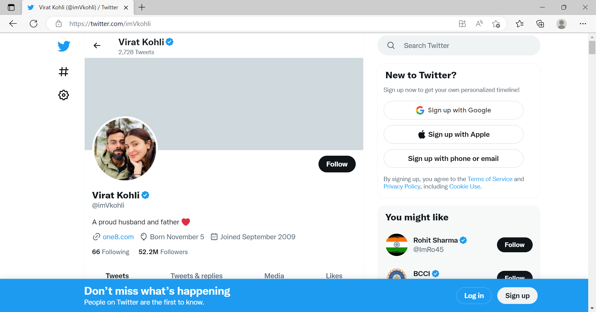

🏏Virat Kohil 🏏
As the euphoria around Virat Kohli-orchestrated Indian win over Pakistan is still settling, the 1983 World Cup-winning member Madan Lal says the 'Men in Blue' must not rely on the heroics of just one or two players if they are to lift the T20 World Cup trophy. Kohli was at his imperious best against a decent Pakistan attack as he single-handedly piloted India to memorable four-wicket win at the iconic MCG on Sunday.
Tweets 🕊️

Images 🙅♂️

india vs pakistan highlights
Google Map